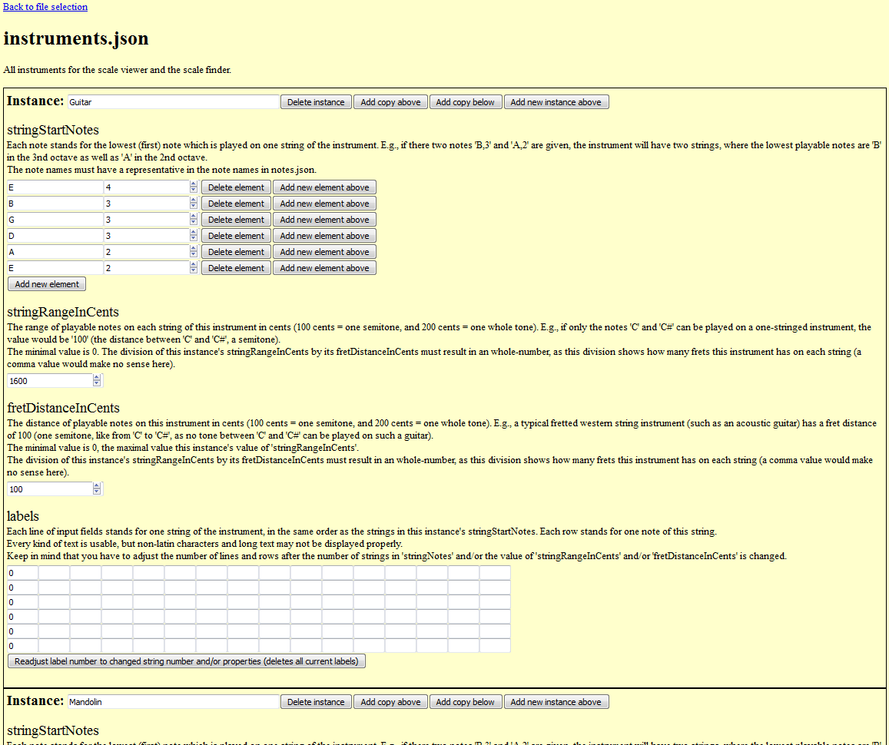
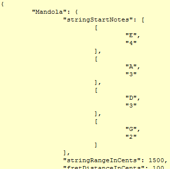

Copyright (C) 2017 Paulocracy.
Permission is granted to copy, distribute and/or modify this document
under the terms of the GNU Free Documentation License, Version 1.3
or any later version published by the Free Software Foundation;
with no Invariant Sections, no Front-Cover Texts, and no Back-Cover Texts.
A copy of the license is included in the section entitled "GNU
Free Documentation License".
This manual gives an overview of BachBro's functions. Before you start using BachBro, it may be useful to read some introductory notes about it:
This tab contains many of BachBro's features. They can be summarized as follows:
Usage example 1 - Looking up consonant western classical intervals of a note:
Usage example 2 - Looking up consonant western classical intervals of two notes:
Usage example 3 - A scale sample output of C major (Output produced by the scorewriter MuseScore 2.0.3):
Usage example 4 - A chord sample of the D half-flat minor chord (Output produced by the scorewriter MuseScore 2.0.3):
Usage example 5 - A randomized sample of D Harmonic Minor (Output produced by the scorewriter MuseScore 2.0.3):
Purpose and usage
The checkboxed are ordered i) in ascending order (starting from C) and ii) in the user selected instrument string and note order (when the user changes the instrument via the combobox at the bottom of the window, these checkboxed are rearranged automatically). If you click on the checkboxes, which represent notes, all scales/chords which include all of the selected notes (this includes scales/chords which include the selected notes together with other notes) are shown in the tab's list, with their corresponding keynote. If you double click on a fitting scale/chord in the list, you will be redirected to the "View Scales/Chords" tab showing the selected scale/chord.
Usage example: Finding all scales that include all notes of a C major scale:
Purpose and usage
With the fractions calculator, you can calculate sums of fractions. These fractions
represent note lengths. One usage field could be to find out the measure of a piece of
music that you heard. To calculate the sum of a specific set of fractions, you
just have to click on the buttons representing the note lengths. E.g., the button
"1/4" stands for the length of a quarter note. The fractions you sum up are shows
in the "Current input" text field.
In the "Result" section, you can see if the sum is a multiple (or exactly the value)
of the shown fractions. E.g., you can see after "1/16:" how many multiples of a 1/16th
your calculated sum is. If the value is an integer, it is marked by an asterisk.
Usage example
In the following figure, you can see the calculated sum of the note lengths of a half note, two sixteenth notes and an eighth note. As you can see in the "1/4:" result section, their note lengths sum up to three quarters. If these notes would represent the bass of a piece of music, this could mean that this piece of music is written in a 3/4 measure. Of course, other interpretations are possible, e.g. that the measure is 4/8 or 1/2.
Purpose and usage
Using aubio (https://www.aubio.org/, accessed in November 2016), note pitches and lengths are recognized from audio files or from a microphone recording (the recording is performed with the help
of PyAudio (https://www.people.csail.mit.edu/hubert/pyaudio/, accessed in November 2016)). You can select the .wav via a subwindow. If you select a microphone recording, the corresponding button shows "RECORDING...". You have to click this button again to stop the recording and to start
the note recognition. The recognized notes are written into a MusicXML score and shown in the user selected scorewriter program.
It is possible to enhance the quality of the recording by setting borders for the highest and lowest note. All notes which are as low or lower than the lowest allowed note will be ignored, just like all notes
higher than the highest note. You can also exclude which note lengths (read from note_lengths.json) shall be ignored. If a note of an excluded length is recognized,the next fitting note length will be assigned
to this note.
Usage example - Generated MusicXML of recognized notes from a .wav file (Output produced by aubio and the scorewriter MuseScore 2.0.3):
6.1 BachBro's editable data files
All music theory data used by BachBro - such as scales, instruments, notes or note intervals - is stored in human readable JSON text files in BachBro's "data" subfolder. JSON is an open standard for text files containing data.
These JSON files are loaded by BachBro at every program start and used as theory base for the whole program.
Each JSON file (such as "instruments.json", which contains all instruments which are e.g. used for the instrument view of scales) describes the members of a music theory class (in the case of "instruments.json", the instruments).
For every class, instance members are defined (e.g., the "guitar" is an instance member of the instrument class). Each instance of a class has the same set of attributes (in the case of instruments, e.g. their string properties).
You can edit these JSON data files too, either by editing them directly with a text editor, or much easier with the BachBro Data Editor...
6.2 The BachBro Data Editor
This data editor is the second major program of the BachBro project, and is programatically separated from BachBro itself, but usually provided together with it. This editor works in every modern browser, such as recent versions of Mozilla Firefox.
You can find the data editor's main file "data_editor.html" in your BachBro main folder. You have to open this file with your modern browser to start it, two possible to do are are by double-clicking on it or by opening the file via your browser's "file' menu entry. You also have to allow JavaScript and pop-ups for this program. The data editor works only locally, no
connection is made and no data is send to the internet. You don't even need an internet connection in order to run this program.
Once you have started the data editor, you can choose the BachBro JSON data file by using the file dialog. If the file is not editable, you get an error message. If this is not the case, you will see all instances and attributes of the class which is described by this JSON file. The class itself and all attributes have text explanations of their usage and variable range.
You can edit the data just by chaning the values in the entries or by adding or deleting new atrributes or instances.
After you finished your intended changes to the data, you have to save them. To do this, you have to click on "Save ABC.json" (where 'ABC' is the name of the JSON file). This will open a new browser window or tab which contains the changed data in the JSON format again. You habve to save the text content (not the HTML source code) of this new browser window/tab. In Mozilla Firefox,
you could do this by pressing CTRL+S while you still have the new browser window/tab opened. Then, you have to choose the save format ".txt" and to choose the BachBro JSON file that you want to change again (usually, this is the JSON file you opened at the beginning of the editing process).
If you followed the instructions correctly, you can see the changed data in BachBro by restarting it.
All major usage steps are visually shown in the next section...
6.3 Usage example: Adding a new instrument
6.3.1 Start the data editor by opening "data_editor.html" in BachBro's main folder with a modern web browser. You will see the file selection dialog afterwards (you have to allow JavaScript and pop-ups for this HTML file in order to run the data editor properly):
6.3.2 Choose a BachBro JSON file by clicking on the file choosing button and by going to BachBro's "data" subfolder. Choose "instruments.json", as we want to edit the instrument database:
6.3.3 Once you opened "instruments.json", you will see all of its data as shown in the next figure. Every instance is separated from each other with black lines. In this example we want to add a mandola (in the sense of an octave-lowered mandolin).

6.3.4 Click on the "Add new instance above" button which is to the right of the instance name field. You just created a blank and new instrument. Every attribute is shown with an explanation of it, so that you know what it means and which values are allowed for it.
6.3.5 At first, write the key name of the new instrument. A key name must be unique in a database. If there are multiple instances with the same key name, all but one of these won't be saved in the resulting edited file! In our case, the instrument is a "mandola":
6.3.6 Afterwards, you have to set the instrument's strings and their start notes as described in the attribute's explanation and by pressing the "Add new element" button:
6.3.7 The next two parameters have to be set according to their description, too. In the case of the mandola, there are around 15 playable notes per string, and each note has a distance of 100 cents from the previous one.
6.3.8 As you have set all other parameters, you can create a field of text entries which stand for one label on the string of an instrument. To create this entry field, simply press the "Adjust (...)" button:
6.3.9 Now, the mandola instance is finished. You can save the edited file by pressing "Save instruments.json" at the bottom of the data editor:
6.3.10 A new tab opens (you have to allow pop-ups for the data editor to see it) which contains the edited instrument JSON data file:

6.3.11 You must not save the HTML content of this file, but only the text content. In Mozilla Firefox, you can do this by saving the file as a .txt/text file. You have to overwrite the old instruments.json in BachBro's "data" subfolder to see your edit in Musician Assistant. In Mozilla Firefox, you won't see this file in the subfolder as you selected .txt files, but you can still overwrite it by naming your saved file "instruments.json" (while saving it in the "data" subfolder):
6.3.12 Now, you have finished the addition of the mandola. You can use the mandola in BachBro:
All other databases, such as intervals and notes, are very similar in their edit process. Aside of adding one or more new instances, you can also edit or copy (keep in mind that instance keys must be unique in the scope of a JSON file) old ones.
GNU Free Documentation License
Version 1.3, 3 November 2008
Copyright © 2000, 2001, 2002, 2007, 2008 Free Software Foundation, Inc.
Everyone is permitted to copy and distribute verbatim copies of this license document, but changing it is not allowed.
0. PREAMBLE
The purpose of this License is to make a manual, textbook, or other functional and useful document "free" in the sense of freedom: to assure everyone the effective freedom to copy and redistribute it, with or without modifying it, either commercially or noncommercially. Secondarily, this License preserves for the author and publisher a way to get credit for their work, while not being considered responsible for modifications made by others.
This License is a kind of "copyleft", which means that derivative works of the document must themselves be free in the same sense. It complements the GNU General Public License, which is a copyleft license designed for free software.
We have designed this License in order to use it for manuals for free software, because free software needs free documentation: a free program should come with manuals providing the same freedoms that the software does. But this License is not limited to software manuals; it can be used for any textual work, regardless of subject matter or whether it is published as a printed book. We recommend this License principally for works whose purpose is instruction or reference.
1. APPLICABILITY AND DEFINITIONS
This License applies to any manual or other work, in any medium, that contains a notice placed by the copyright holder saying it can be distributed under the terms of this License. Such a notice grants a world-wide, royalty-free license, unlimited in duration, to use that work under the conditions stated herein. The "Document", below, refers to any such manual or work. Any member of the public is a licensee, and is addressed as "you". You accept the license if you copy, modify or distribute the work in a way requiring permission under copyright law.
A "Modified Version" of the Document means any work containing the Document or a portion of it, either copied verbatim, or with modifications and/or translated into another language.
A "Secondary Section" is a named appendix or a front-matter section of the Document that deals exclusively with the relationship of the publishers or authors of the Document to the Document's overall subject (or to related matters) and contains nothing that could fall directly within that overall subject. (Thus, if the Document is in part a textbook of mathematics, a Secondary Section may not explain any mathematics.) The relationship could be a matter of historical connection with the subject or with related matters, or of legal, commercial, philosophical, ethical or political position regarding them.
The "Invariant Sections" are certain Secondary Sections whose titles are designated, as being those of Invariant Sections, in the notice that says that the Document is released under this License. If a section does not fit the above definition of Secondary then it is not allowed to be designated as Invariant. The Document may contain zero Invariant Sections. If the Document does not identify any Invariant Sections then there are none.
The "Cover Texts" are certain short passages of text that are listed, as Front-Cover Texts or Back-Cover Texts, in the notice that says that the Document is released under this License. A Front-Cover Text may be at most 5 words, and a Back-Cover Text may be at most 25 words.
A "Transparent" copy of the Document means a machine-readable copy, represented in a format whose specification is available to the general public, that is suitable for revising the document straightforwardly with generic text editors or (for images composed of pixels) generic paint programs or (for drawings) some widely available drawing editor, and that is suitable for input to text formatters or for automatic translation to a variety of formats suitable for input to text formatters. A copy made in an otherwise Transparent file format whose markup, or absence of markup, has been arranged to thwart or discourage subsequent modification by readers is not Transparent. An image format is not Transparent if used for any substantial amount of text. A copy that is not "Transparent" is called "Opaque".
Examples of suitable formats for Transparent copies include plain ASCII without markup, Texinfo input format, LaTeX input format, SGML or XML using a publicly available DTD, and standard-conforming simple HTML, PostScript or PDF designed for human modification. Examples of transparent image formats include PNG, XCF and JPG. Opaque formats include proprietary formats that can be read and edited only by proprietary word processors, SGML or XML for which the DTD and/or processing tools are not generally available, and the machine-generated HTML, PostScript or PDF produced by some word processors for output purposes only.
The "Title Page" means, for a printed book, the title page itself, plus such following pages as are needed to hold, legibly, the material this License requires to appear in the title page. For works in formats which do not have any title page as such, "Title Page" means the text near the most prominent appearance of the work's title, preceding the beginning of the body of the text.
The "publisher" means any person or entity that distributes copies of the Document to the public.
A section "Entitled XYZ" means a named subunit of the Document whose title either is precisely XYZ or contains XYZ in parentheses following text that translates XYZ in another language. (Here XYZ stands for a specific section name mentioned below, such as "Acknowledgements", "Dedications", "Endorsements", or "History".) To "Preserve the Title" of such a section when you modify the Document means that it remains a section "Entitled XYZ" according to this definition.
The Document may include Warranty Disclaimers next to the notice which states that this License applies to the Document. These Warranty Disclaimers are considered to be included by reference in this License, but only as regards disclaiming warranties: any other implication that these Warranty Disclaimers may have is void and has no effect on the meaning of this License.
2. VERBATIM COPYING
You may copy and distribute the Document in any medium, either commercially or noncommercially, provided that this License, the copyright notices, and the license notice saying this License applies to the Document are reproduced in all copies, and that you add no other conditions whatsoever to those of this License. You may not use technical measures to obstruct or control the reading or further copying of the copies you make or distribute. However, you may accept compensation in exchange for copies. If you distribute a large enough number of copies you must also follow the conditions in section 3.
You may also lend copies, under the same conditions stated above, and you may publicly display copies.
3. COPYING IN QUANTITY
If you publish printed copies (or copies in media that commonly have printed covers) of the Document, numbering more than 100, and the Document's license notice requires Cover Texts, you must enclose the copies in covers that carry, clearly and legibly, all these Cover Texts: Front-Cover Texts on the front cover, and Back-Cover Texts on the back cover. Both covers must also clearly and legibly identify you as the publisher of these copies. The front cover must present the full title with all words of the title equally prominent and visible. You may add other material on the covers in addition. Copying with changes limited to the covers, as long as they preserve the title of the Document and satisfy these conditions, can be treated as verbatim copying in other respects.
If the required texts for either cover are too voluminous to fit legibly, you should put the first ones listed (as many as fit reasonably) on the actual cover, and continue the rest onto adjacent pages.
If you publish or distribute Opaque copies of the Document numbering more than 100, you must either include a machine-readable Transparent copy along with each Opaque copy, or state in or with each Opaque copy a computer-network location from which the general network-using public has access to download using public-standard network protocols a complete Transparent copy of the Document, free of added material. If you use the latter option, you must take reasonably prudent steps, when you begin distribution of Opaque copies in quantity, to ensure that this Transparent copy will remain thus accessible at the stated location until at least one year after the last time you distribute an Opaque copy (directly or through your agents or retailers) of that edition to the public.
It is requested, but not required, that you contact the authors of the Document well before redistributing any large number of copies, to give them a chance to provide you with an updated version of the Document.
4. MODIFICATIONS
You may copy and distribute a Modified Version of the Document under the conditions of sections 2 and 3 above, provided that you release the Modified Version under precisely this License, with the Modified Version filling the role of the Document, thus licensing distribution and modification of the Modified Version to whoever possesses a copy of it. In addition, you must do these things in the Modified Version:
A. Use in the Title Page (and on the covers, if any) a title distinct from that of the Document, and from those of previous versions (which should, if there were any, be listed in the History section of the Document). You may use the same title as a previous version if the original publisher of that version gives permission.
B. List on the Title Page, as authors, one or more persons or entities responsible for authorship of the modifications in the Modified Version, together with at least five of the principal authors of the Document (all of its principal authors, if it has fewer than five), unless they release you from this requirement.
C. State on the Title page the name of the publisher of the Modified Version, as the publisher.
D. Preserve all the copyright notices of the Document.
E. Add an appropriate copyright notice for your modifications adjacent to the other copyright notices.
F. Include, immediately after the copyright notices, a license notice giving the public permission to use the Modified Version under the terms of this License, in the form shown in the Addendum below.
G. Preserve in that license notice the full lists of Invariant Sections and required Cover Texts given in the Document's license notice.
H. Include an unaltered copy of this License.
I. Preserve the section Entitled "History", Preserve its Title, and add to it an item stating at least the title, year, new authors, and publisher of the Modified Version as given on the Title Page. If there is no section Entitled "History" in the Document, create one stating the title, year, authors, and publisher of the Document as given on its Title Page, then add an item describing the Modified Version as stated in the previous sentence.
J. Preserve the network location, if any, given in the Document for public access to a Transparent copy of the Document, and likewise the network locations given in the Document for previous versions it was based on. These may be placed in the "History" section. You may omit a network location for a work that was published at least four years before the Document itself, or if the original publisher of the version it refers to gives permission.
K. For any section Entitled "Acknowledgements" or "Dedications", Preserve the Title of the section, and preserve in the section all the substance and tone of each of the contributor acknowledgements and/or dedications given therein.
L. Preserve all the Invariant Sections of the Document, unaltered in their text and in their titles. Section numbers or the equivalent are not considered part of the section titles.
M. Delete any section Entitled "Endorsements". Such a section may not be included in the Modified Version.
N. Do not retitle any existing section to be Entitled "Endorsements" or to conflict in title with any Invariant Section.
O. Preserve any Warranty Disclaimers.
If the Modified Version includes new front-matter sections or appendices that qualify as Secondary Sections and contain no material copied from the Document, you may at your option designate some or all of these sections as invariant. To do this, add their titles to the list of Invariant Sections in the Modified Version's license notice. These titles must be distinct from any other section titles.
You may add a section Entitled "Endorsements", provided it contains nothing but endorsements of your Modified Version by various parties—for example, statements of peer review or that the text has been approved by an organization as the authoritative definition of a standard.
You may add a passage of up to five words as a Front-Cover Text, and a passage of up to 25 words as a Back-Cover Text, to the end of the list of Cover Texts in the Modified Version. Only one passage of Front-Cover Text and one of Back-Cover Text may be added by (or through arrangements made by) any one entity. If the Document already includes a cover text for the same cover, previously added by you or by arrangement made by the same entity you are acting on behalf of, you may not add another; but you may replace the old one, on explicit permission from the previous publisher that added the old one.
The author(s) and publisher(s) of the Document do not by this License give permission to use their names for publicity for or to assert or imply endorsement of any Modified Version.
5. COMBINING DOCUMENTS
You may combine the Document with other documents released under this License, under the terms defined in section 4 above for modified versions, provided that you include in the combination all of the Invariant Sections of all of the original documents, unmodified, and list them all as Invariant Sections of your combined work in its license notice, and that you preserve all their Warranty Disclaimers.
The combined work need only contain one copy of this License, and multiple identical Invariant Sections may be replaced with a single copy. If there are multiple Invariant Sections with the same name but different contents, make the title of each such section unique by adding at the end of it, in parentheses, the name of the original author or publisher of that section if known, or else a unique number. Make the same adjustment to the section titles in the list of Invariant Sections in the license notice of the combined work.
In the combination, you must combine any sections Entitled "History" in the various original documents, forming one section Entitled "History"; likewise combine any sections Entitled "Acknowledgements", and any sections Entitled "Dedications". You must delete all sections Entitled "Endorsements".
6. COLLECTIONS OF DOCUMENTS
You may make a collection consisting of the Document and other documents released under this License, and replace the individual copies of this License in the various documents with a single copy that is included in the collection, provided that you follow the rules of this License for verbatim copying of each of the documents in all other respects.
You may extract a single document from such a collection, and distribute it individually under this License, provided you insert a copy of this License into the extracted document, and follow this License in all other respects regarding verbatim copying of that document.
7. AGGREGATION WITH INDEPENDENT WORKS
A compilation of the Document or its derivatives with other separate and independent documents or works, in or on a volume of a storage or distribution medium, is called an "aggregate" if the copyright resulting from the compilation is not used to limit the legal rights of the compilation's users beyond what the individual works permit. When the Document is included in an aggregate, this License does not apply to the other works in the aggregate which are not themselves derivative works of the Document.
If the Cover Text requirement of section 3 is applicable to these copies of the Document, then if the Document is less than one half of the entire aggregate, the Document's Cover Texts may be placed on covers that bracket the Document within the aggregate, or the electronic equivalent of covers if the Document is in electronic form. Otherwise they must appear on printed covers that bracket the whole aggregate.
8. TRANSLATION
Translation is considered a kind of modification, so you may distribute translations of the Document under the terms of section 4. Replacing Invariant Sections with translations requires special permission from their copyright holders, but you may include translations of some or all Invariant Sections in addition to the original versions of these Invariant Sections. You may include a translation of this License, and all the license notices in the Document, and any Warranty Disclaimers, provided that you also include the original English version of this License and the original versions of those notices and disclaimers. In case of a disagreement between the translation and the original version of this License or a notice or disclaimer, the original version will prevail.
If a section in the Document is Entitled "Acknowledgements", "Dedications", or "History", the requirement (section 4) to Preserve its Title (section 1) will typically require changing the actual title.
9. TERMINATION
You may not copy, modify, sublicense, or distribute the Document except as expressly provided under this License. Any attempt otherwise to copy, modify, sublicense, or distribute it is void, and will automatically terminate your rights under this License.
However, if you cease all violation of this License, then your license from a particular copyright holder is reinstated (a) provisionally, unless and until the copyright holder explicitly and finally terminates your license, and (b) permanently, if the copyright holder fails to notify you of the violation by some reasonable means prior to 60 days after the cessation.
Moreover, your license from a particular copyright holder is reinstated permanently if the copyright holder notifies you of the violation by some reasonable means, this is the first time you have received notice of violation of this License (for any work) from that copyright holder, and you cure the violation prior to 30 days after your receipt of the notice.
Termination of your rights under this section does not terminate the licenses of parties who have received copies or rights from you under this License. If your rights have been terminated and not permanently reinstated, receipt of a copy of some or all of the same material does not give you any rights to use it.
10. FUTURE REVISIONS OF THIS LICENSE
The Free Software Foundation may publish new, revised versions of the GNU Free Documentation License from time to time. Such new versions will be similar in spirit to the present version, but may differ in detail to address new problems or concerns. See http://www.gnu.org/copyleft/.
Each version of the License is given a distinguishing version number. If the Document specifies that a particular numbered version of this License "or any later version" applies to it, you have the option of following the terms and conditions either of that specified version or of any later version that has been published (not as a draft) by the Free Software Foundation. If the Document does not specify a version number of this License, you may choose any version ever published (not as a draft) by the Free Software Foundation. If the Document specifies that a proxy can decide which future versions of this License can be used, that proxy's public statement of acceptance of a version permanently authorizes you to choose that version for the Document.
11. RELICENSING
"Massive Multiauthor Collaboration Site" (or "MMC Site") means any World Wide Web server that publishes copyrightable works and also provides prominent facilities for anybody to edit those works. A public wiki that anybody can edit is an example of such a server. A "Massive Multiauthor Collaboration" (or "MMC") contained in the site means any set of copyrightable works thus published on the MMC site.
"CC-BY-SA" means the Creative Commons Attribution-Share Alike 3.0 license published by Creative Commons Corporation, a not-for-profit corporation with a principal place of business in San Francisco, California, as well as future copyleft versions of that license published by that same organization.
"Incorporate" means to publish or republish a Document, in whole or in part, as part of another Document.
An MMC is "eligible for relicensing" if it is licensed under this License, and if all works that were first published under this License somewhere other than this MMC, and subsequently incorporated in whole or in part into the MMC, (1) had no cover texts or invariant sections, and (2) were thus incorporated prior to November 1, 2008.
The operator of an MMC Site may republish an MMC contained in the site under CC-BY-SA on the same site at any time before August 1, 2009, provided the MMC is eligible for relicensing.